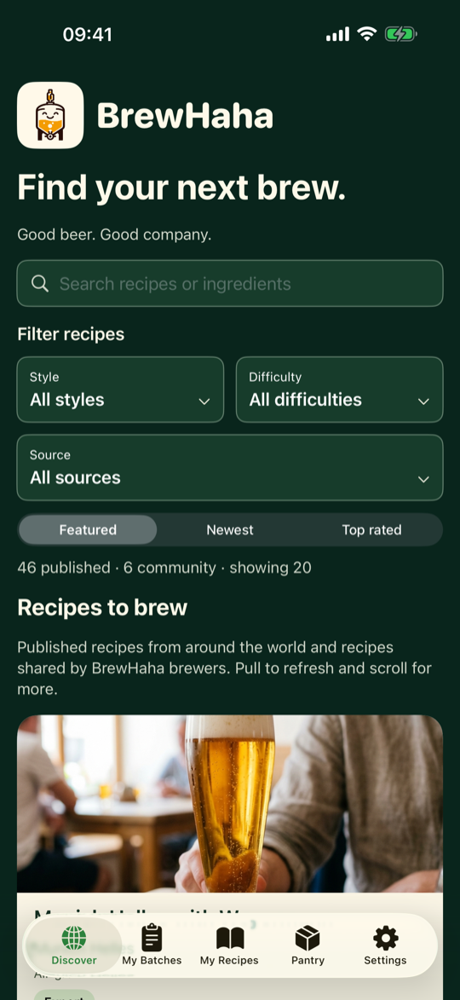
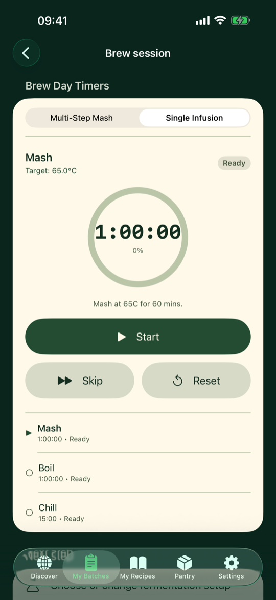
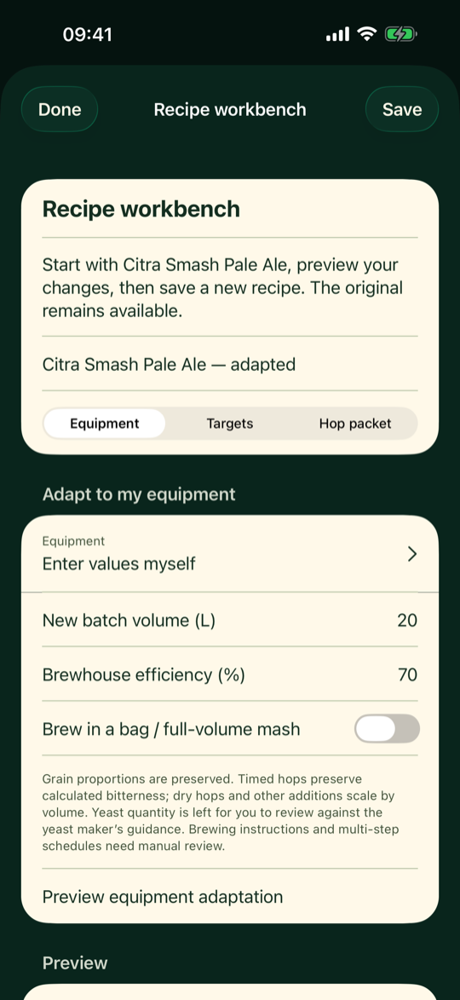
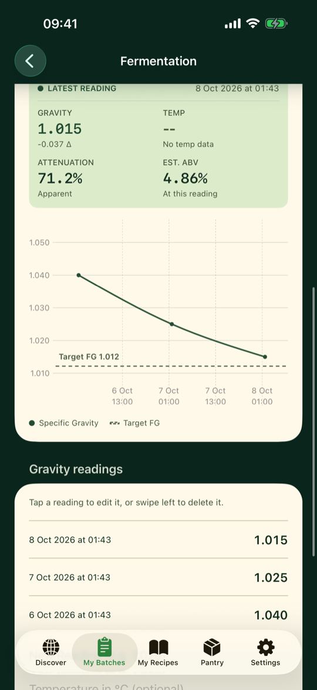
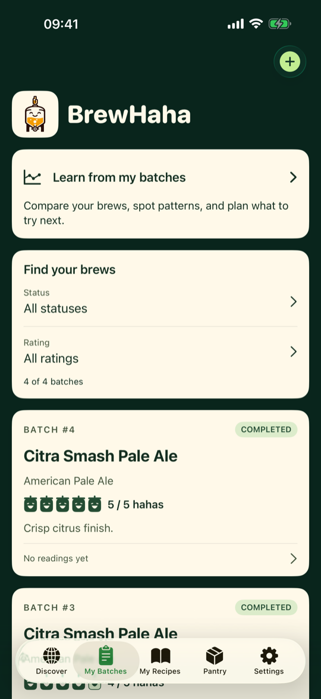
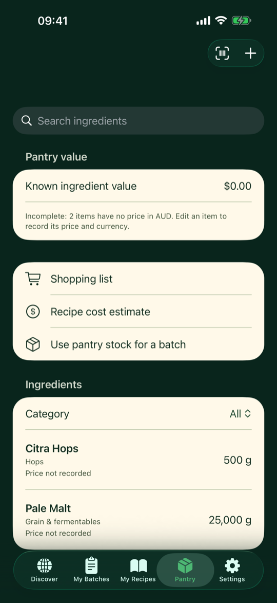

Free. No account. Your records stay on your device.
New in 1.2: bring your Brewfather recipes across
Import recipe JSON now opens Brewfather recipe exports (Recipe → Export → JSON) as well as BrewHaha files. Grains, hops, yeast, extras, mash and fermentation steps come through ready to edit.
Find your next brew
Discover gathers published recipes from brewing organisations, magazines and suppliers around the world, alongside recipes shared by fellow homebrewers. Filter by style, difficulty and source, check the original source, and save an editable copy to My Recipes.

Brew with the help you need
Choose Guided, Standard or Expert and get as much explanation as you want. Brew-day timers keep your steps and ingredient additions together, and illustrated guides cover preparation, fermentation, bottling and transfers to a keg, with separate guidance for airlock and pressure fermentation.

Make the recipe your own
Adapt any recipe to your batch size and equipment, explore strength and bitterness targets, and adjust hop quantities for the alpha-acid percentage on your packet. Preview the changes, compare recipes and save a new version while keeping the original.

Follow fermentation
Log gravity and temperature readings and see every reading on one chart, with your target final gravity marked. Read a compatible Tilt hydrometer over Bluetooth while the app is open, or type readings in yourself.

Rate it in ha-has
Give each finished brew one to five ha-has straight from My Batches and keep your own tasting notes. BrewHaha reminds you to taste and rate it two weeks after it's done, and Learn from my batches helps you spot trends and plan one useful change for next time.

Keep your pantry organised
Track ingredients, prepare shopping lists and estimate recipe costs from the prices you record. Scan a barcode to match a saved pantry item, or choose an optional online lookup through Open Food Facts for an unknown product.

Your records stay with you
Recipes, batches, readings, notes and pantry are stored on your device. Only the recipes, photos and ratings you choose to share with the community leave it. Export a backup whenever you like and import it on a new phone or tablet; backups work across iPhone, iPad and Android. There is no BrewHaha account to create. Read the privacy policy.
Need help?
The support page covers getting started, community rules, equipment profiles, barcode scanning and backups. For anything else, email support@brewhaha.me.